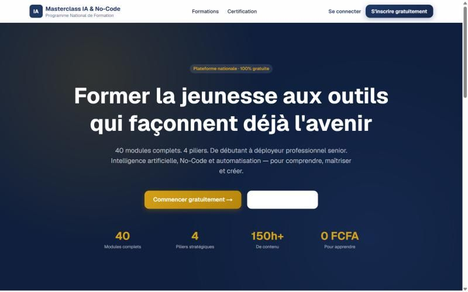
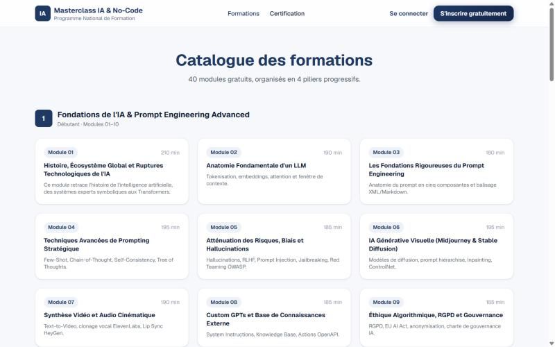

Points clés
- 40 modules gratuits, 4 piliers, plus de 150 heures de contenu
- Du prompt engineering à l'architecture data
- Certification optionnelle par pilier
- Site rapide, pensé pour les connexions mobiles
Aperçu


Auteur
Teede Augustin NOUDAMADJO, Data Scientist Junior à Lyon. Retrouvez la documentation complète, le code et la vidéo de démonstration sur GitHub.